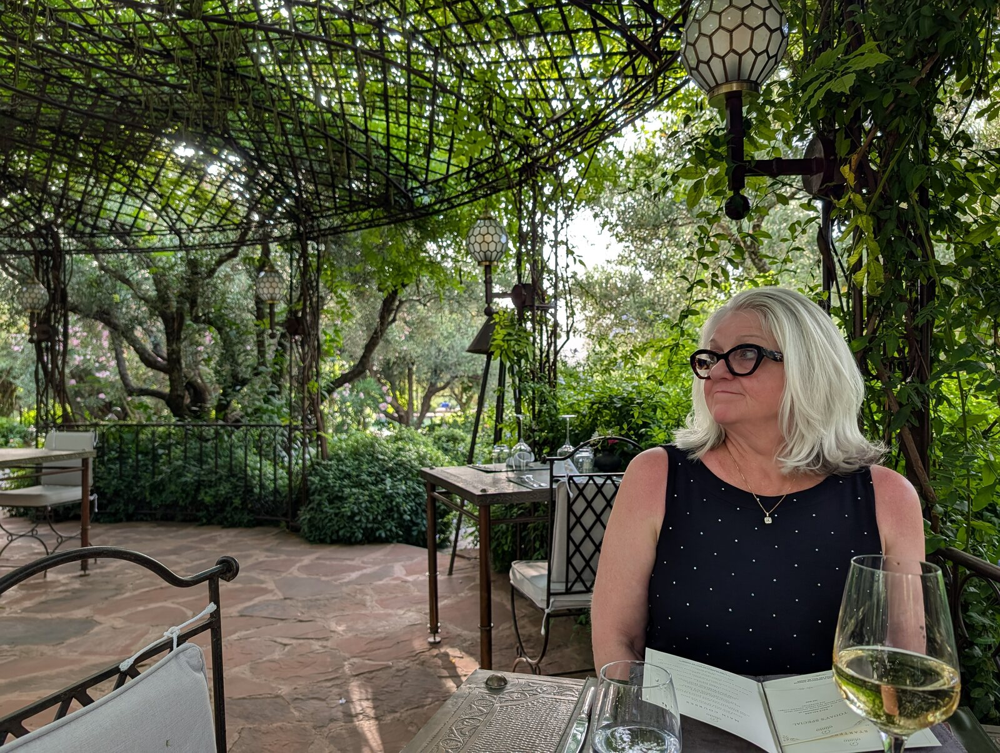
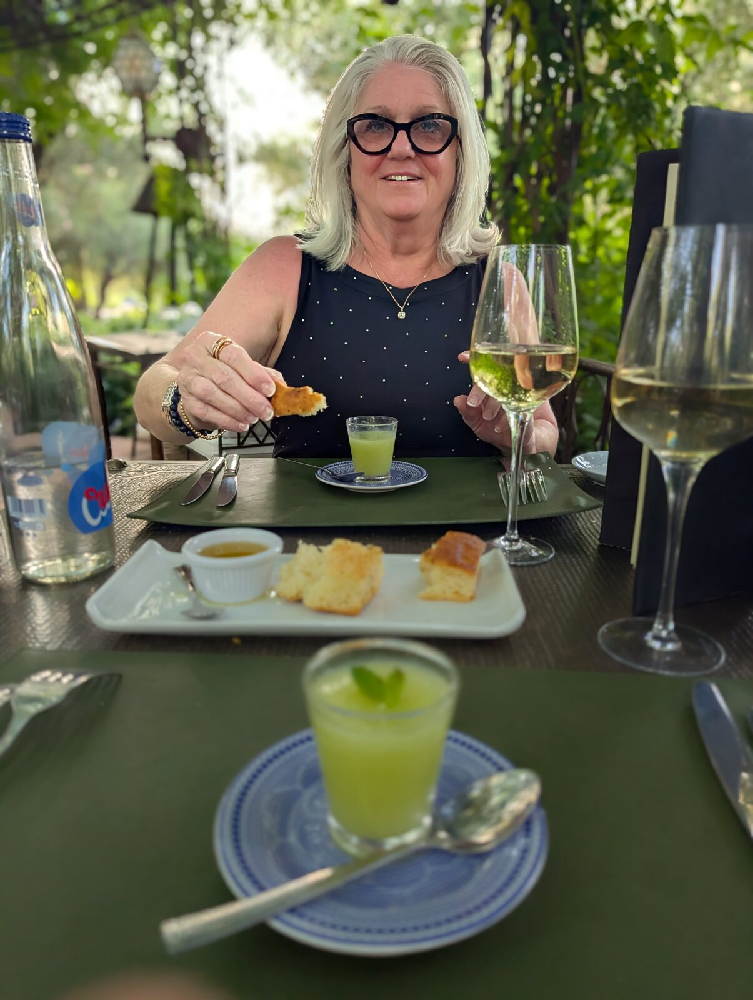
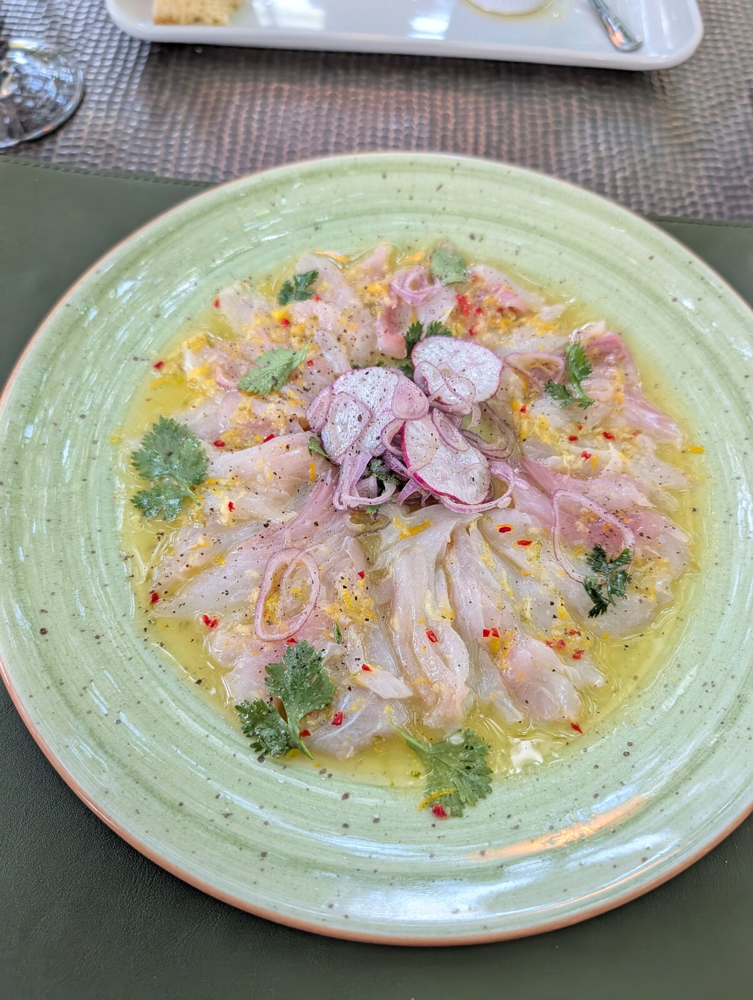
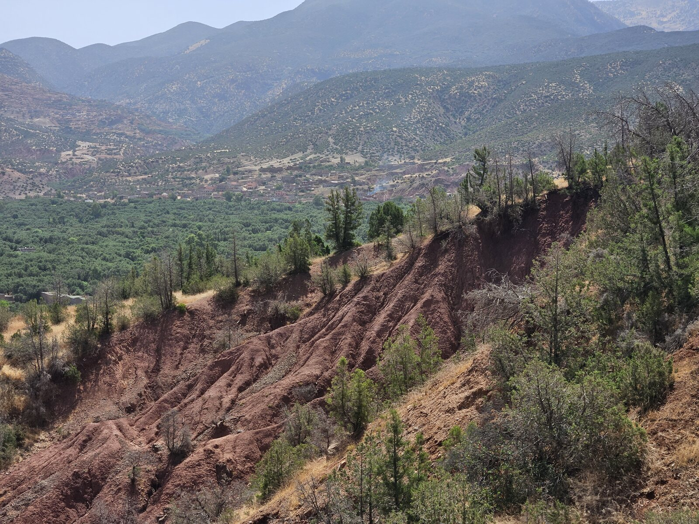
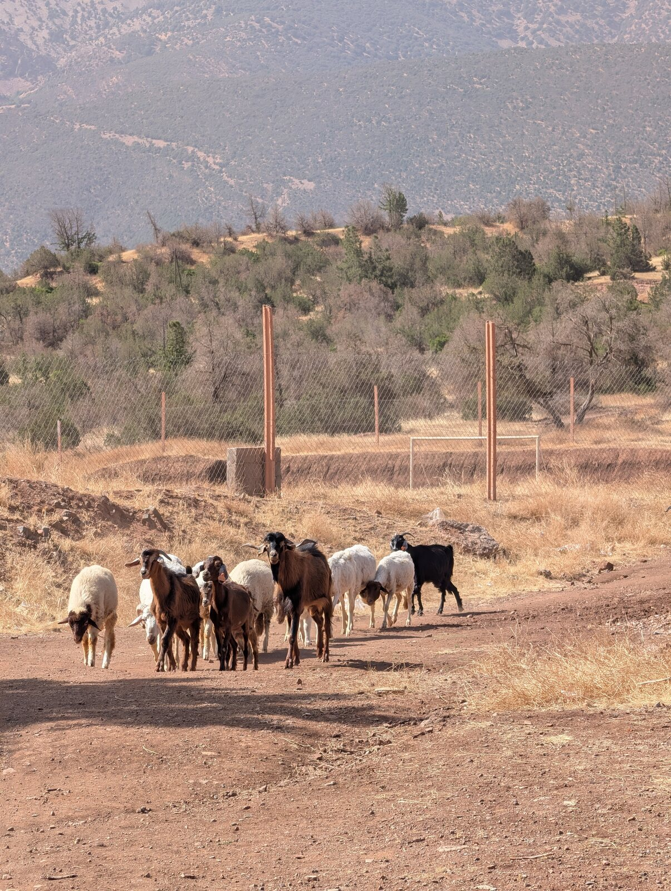
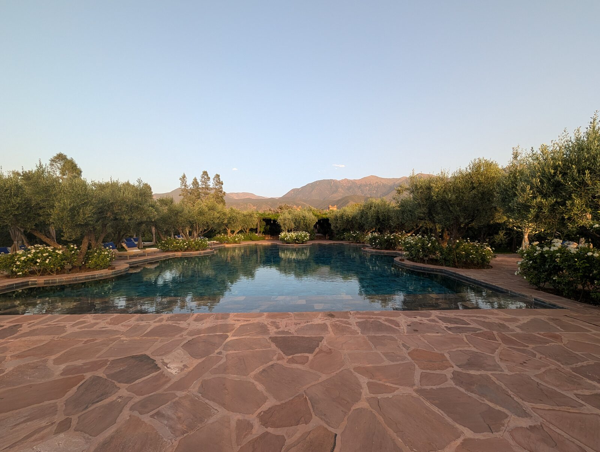
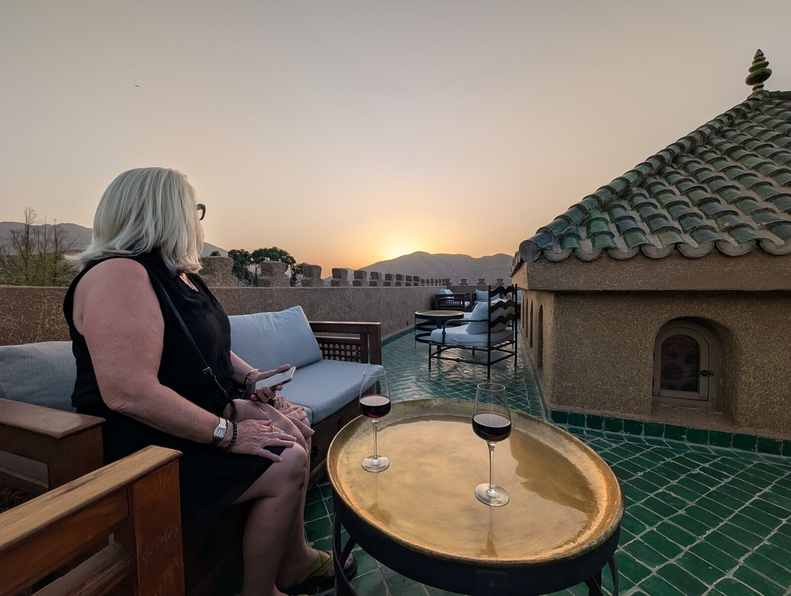
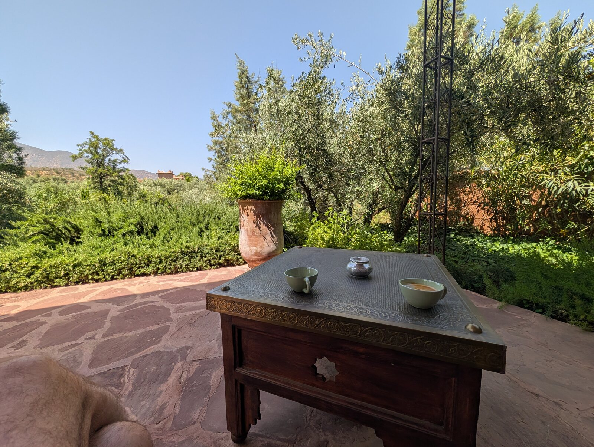
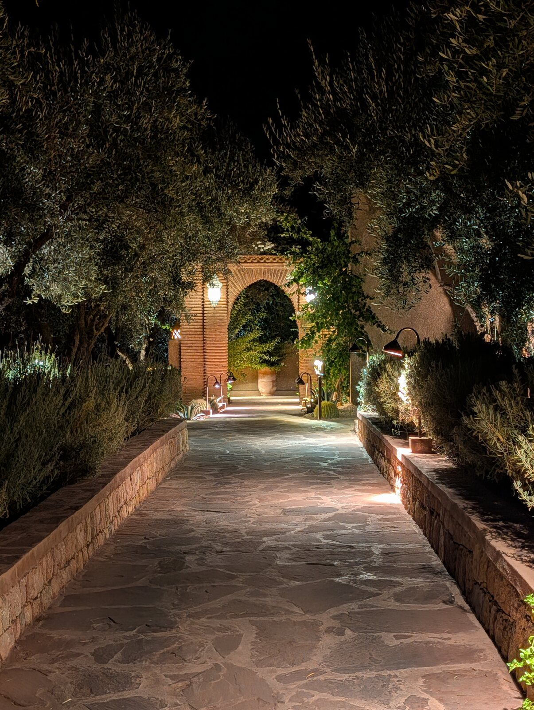

After several busy days in Marrakech, we left the city on July 5 and headed into the Atlas Mountains.
Our destination was Olinto Atlas Mountain Retreat & Spa.
The change from Marrakech was immediate.
The city had been crowded, active and stimulating. Olinto was quiet.
And we were ready for quiet.
Olinto
The property was beautiful, with lovely gardens and only nine guest pavilions.
There wasn't a long list of things we needed to see.
There wasn't really anywhere we needed to go.
That was part of the appeal.
We had spent our time in Marrakech exploring. Here, we could simply enjoy where we were.
And almost immediately, we slowed down.
Dinner in the Mountains
Our first dinner made an impression.
There was only one other guest at the property.
The setting and service were extraordinary enough that I found myself thinking about how strange our lives had become.
Places like this still felt slightly outside my comfort zone—almost above my station in life.
We could afford to be there.
That wasn't the issue.
It was simply taking some time to become accustomed to the idea that this was now something we could do.
That feeling would come up more than once on this trip.
Not Much of Anything
The next couple of days were wonderfully uneventful.
We relaxed.
We wandered around the property.
We ate.
We enjoyed the gardens and the mountains.
And we didn't feel any particular need to leave.
By July 7, my daily note began simply:
"Another wonderful and relaxing day."
That pretty much captured it.
After all the activity of Marrakech, doing very little felt good.
Paul the Hotel Critic
We met another guest named Paul, who turned out to be a hotel critic.
That stuck with me enough that I thought about it again weeks later.
We were simply enjoying the property.
Paul was there to evaluate it.
Later I wondered how different an experience becomes when your job is to critique the place you're experiencing rather than simply enjoy it.
It was an interesting thought, particularly because I'd begun doing so much reflecting and writing about our own travels.
There was probably a line somewhere between noticing an experience and turning the experience into work.
Sunset
One of the simplest memories came near the end of the stay.
We had lunch and later returned at sunset to share a bottle of wine.
Nothing extraordinary happened.
There wasn't supposed to be anything happening.
We were sitting together in the Atlas Mountains, watching the day end.
That was enough.
What We'll Remember
We'll remember how dramatically the feeling changed when we left Marrakech and reached the mountains.
We'll remember the gardens and the quiet of Olinto.
We'll remember how intimate the property felt with only nine pavilions and almost no other guests.
We'll remember that first dinner and the strange feeling that staying somewhere like this was still a little outside our comfort zone.
We'll remember Paul the hotel critic and wondering what it must be like to experience a beautiful place while simultaneously having to evaluate it.
We'll remember having almost nothing on the agenda.
And we'll remember sharing wine at sunset in the Atlas Mountains.
Would We Return?
Yes.
In fact, three nights didn't feel like too much.
It felt too short.
Looking back later, we grouped Olinto with the Douro Valley and Hermanus as places where we could easily have stayed longer. We didn't need sightseeing every day because being at the property was itself enjoyable.
That was becoming an important distinction in how we traveled.
Some places invited us to get out and explore.
Others invited us to stay.
Olinto did the latter.
On July 8, we left the Atlas Mountains and headed for the coast and La Sultana Oualidia.









